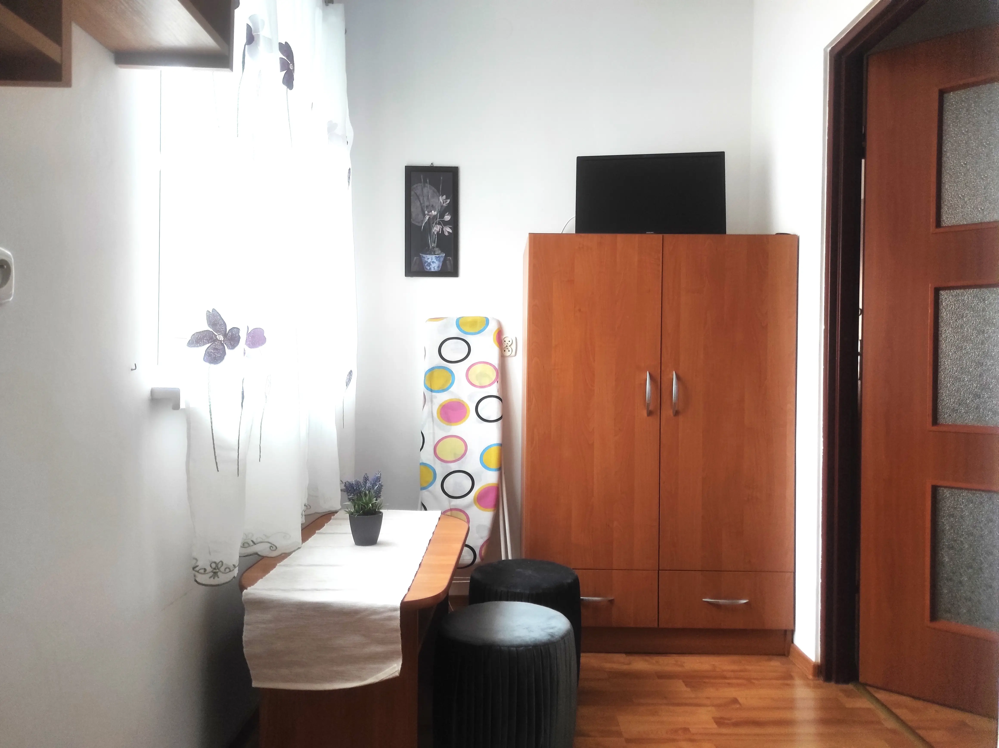

Oferujemy Państwu domek z 7 miejscami noclegowymi
w trzech pokojach: 2 pokoje trzyosobowe i 1 pokój jednoosobowy - z dwoma współdzielonymi łazienkami i aneksem kuchennym.
Pokoje wyposażone są w telewizję i dostęp do internetu.
Ponadto w budynku jest lodówka, kuchenka mikrofalowa, kuchenka gazowa, czajnik i podstawowe naczynia.
Do dyspozycji jest grill, altanka - gdzie można miło spędzić czas.
Po drugiej stronie ulicy jest restauracja z pysznymi, tanimi daniami. Budynek położony 50m od centrum miasta.
Możliwość parkowania samochodu na podwórku zamkniętym.
Latem malownicze krajobrazy gór zachęcają do wędrówek po urozmaiconych szlakach turystycznych i rowerowych.
W okolicy znajdują się liczne wody mineralne, spływ łodziami, kajakami, jazda konna.
Istnieje również możliwość wyjazdów na Słowację (3 km), gdzie można skorzystać z kąpieli
w basenach zimnych i ciepłych.
Zimą wyciągi narciarskie:
Do najbliższego wyciągu jest 2 km - Kokuszka.
- Ryterski Raj - 10 km
- Sucha Dolina -7 km
- Wierchomla- Dwie Doliny - 14 km.
Wyciągi: krzesełko, orczyki, talerzyki i wyciągi dywanowe dla najmłodszych, o długości od 100 do 1600m.
Stoki dobrze przygotowane o różnym stopniu trudności.
Przy małych opadach śniegu trasy są naśnieżane przez armatki, a
wieczorami wybrane stoki oświetlone.
Na każdym wyciągu są instruktorzy nauki jazdy na nartach.
Telefon: 503-799-369
E-mail: urszulas07@poczta.onet.pl
Adres: 33-350 Piwniczna-Zdrój, Jana III Sobieskiego 12